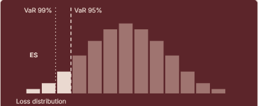
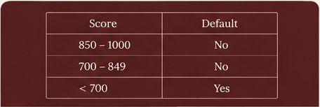
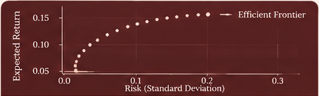
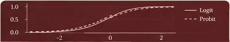
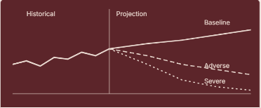
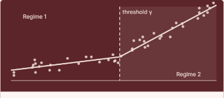

QUANTITATIVE FINANCE
Monte Carlo Simulation
Simulating possible stock price movements through stochastic processes and historical market data.
Explore Project →
QUANTITATIVE FINANCE
Simulating possible stock price movements through stochastic processes and historical market data.
Explore Project →
FINANCIAL RISK
Measuring potential portfolio losses using historical, parametric, and simulation-based methods.
Explore Project →

PORTFOLIO MANAGEMENT
Optimizing portfolio allocation by examining the relationship between expected return and risk.
Explore Project →
ASSET PRICING
Examining the relationship between systematic risk and expected asset returns using CAPM.
Explore Project →
DERIVATIVES
Exploring option pricing and measuring sensitivity to changes in underlying financial variables.
Explore Project →
FIXED INCOME
Analyzing bond valuation and interest rate sensitivity through duration and convexity measures.
Explore Project →
TIME SERIES ANALYSIS
Forecasting future observations using historical time series patterns and statistical modeling.
Explore Project →
VOLATILITY MODELING
Modeling time-varying financial volatility and capturing volatility clustering.
Explore Project →
ECONOMETRICS
Estimating binary outcome probabilities through logistic and probit regression models.
Explore Project →
FINANCIAL RISK
Assessing financial resilience under alternative economic conditions using Scenario Analysis
Explore Project →
ECONOMETRICS
Exploring nonlinear relationships and changes in model behavior across different threshold regimes.
Explore Project →
ECONOMETRICS
Analyzing short-run dynamics and long-run equilibrium relationships between variables.
Explore Project →
BUSINESS CONTINUITY
Evaluating operational impacts, recovery priorities, and business continuity requirements.
Explore Project →